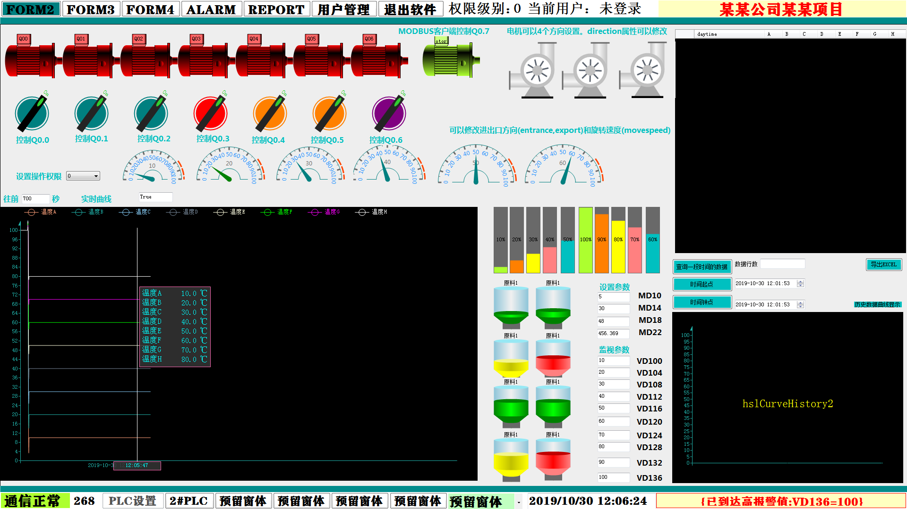

原文连接:https://www.cnblogs.com/softsee/p/11763931.html
PLC服务器监控系统的特点：
1·使用微软C#面向对象开发语言开发应用程序。
2·使用了健壮性与性能良好的SUPER SOCKET服务器通信框架，实现自定义应用层通信协议，支持多台PC客户端访问服务器，实现管理层的电脑实时监控显示生产现场的所有PLC数据，不需要频繁行走车间，节约时间，提高工作效率。
3·使用了性能良好的MODBUS-TCP服务器通信组件HslCommunication.dll，支持数量众多的客户端主动同时访问读写服务器数据。
4·服务器端同时作为客户端采用西门子S7协议与西门子PLC进行高速通信，可主动连接多台西门子PLC（西门子S7协议），进行高速读写PLC数据。服务器端与PLC通信采用主动方式以100ms（可修改）的时间间隔刷写PLC数据，即使某次异常抖动通信失败都不会影响命令的执行，不会出现无反应的情况，保障长期运行的正确性。
5·使用了微软ADO.NET数据库访问技术和高性能的MYSQL8.0数据库，实现海量的PLC监控参数的实时保存功能。MYSQL支持并发数据写入与读取，可以频繁地同时进行保存PLC参数和读取参数用作界面的显示。
6·服务器作为上位机实现以下功能：多窗体快速切换，PLC参数的高低限报警功能，全局报警条的轮流闪烁显示，生产报表的打印，生产人员的用户管理，控件的操作权限设置功能，通信状态的全局显示，实时趋势图和历史趋势图功能同时显示多条参数曲线，电机控件动画显示等等。
7·多任务处理：使用微软多线程技术实现多任务处理。同时进行高速的PLC数据采集与控制，海量的PLC数据写入数据库，前台显示控件读取数据库，响应多客户端访问请求。
8·设置参数的掉电存储功能，运行状态的实时存储与恢复功能，当服务器出现异常或非正常关机（突然停电）后重新开机，电机，阀门等现场执行器件保持在掉电前的状态。
以下是服务器连接1台西门子S7-200SMART的截图，由于GIF图片和视频上传限制，只能用静态图片展示软件部分截图，图片质量损失较严重，动画播放损失严重。实际运行丝丝顺滑。流程图细节清晰，光影效果真实，可根据屏幕分辨率制作2k,4k超清流程图。
展示实时曲线和按钮开关，电机状态显示。

展示流程图和动画控件显示。

服务器窗口实时显示所有在线客户端，可以快速判断故障客户端。
展示实时参数报警功能，参数设置了高低限，当实时值超过限制值时进行报警显示，右下角有一条全局报警条轮流闪烁显示报警值。当参数恢复正常值，报警自动消失。可根据需求任意定制。
报表打印功能，可任意定制修改。
用户权限管理功能。生产人员，管理人员用户名密码和权限值添加后，保存至数据库。支持修改，删除操作。